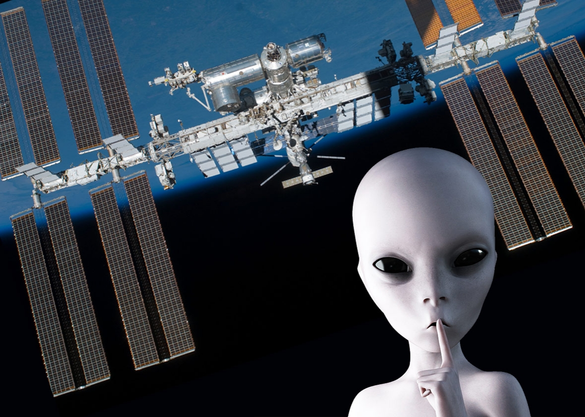

I think it's cool that Adam is married to an astronomer.
I considered astronomy - but apparently my credentials were lacking. I was dumbfounded by the lack of response.
My top 3 influencers were...
-
Morgan Freeman for Presdident
Episodes of 'Through the Wormhole with Morgan Freeman' occupy 50% of the total recording space on our DVR. My wife thinks quantum mechanics and string theory is pretty useless but I catch her every so often peeking to see what E.T looks like. I make claim to having watched several hundred hours of this series and have growing confidence in my ability to accurately describe cause and effect for quasars - well...kind of sort of...ok maybe not.
-
Hubble pictures are the coolest
Hubble gave the world of non-astronomers a reason to like astronomy. We can dismiss the strange and peculiar mathematics for pretty pictures of nebulas, spiral galaxies, red dwarfs and other cool tuff a billion light years away. While hubble redefined our perspective of 'In a galaxy far,far away', it's successor JWST might actually peer deep enough to see the moons on Tatooine! I'm terribly saddened about the delayed launch date:
“The change in launch timing is not indicative of hardware or technical performance concerns,” said Thomas Zurbuchen, associate administrator for NASA’s Science Mission Directorate at Headquarters in Washington. “Rather, the integration of the various spacecraft elements is taking longer than expected.”
Can somebody please call Elon Musk and get this back on track?
-
ISS channel
On occassion, more often that I would publicly admit, I might glance at a feed from the ISS - usually after my 3rd Scotch.
